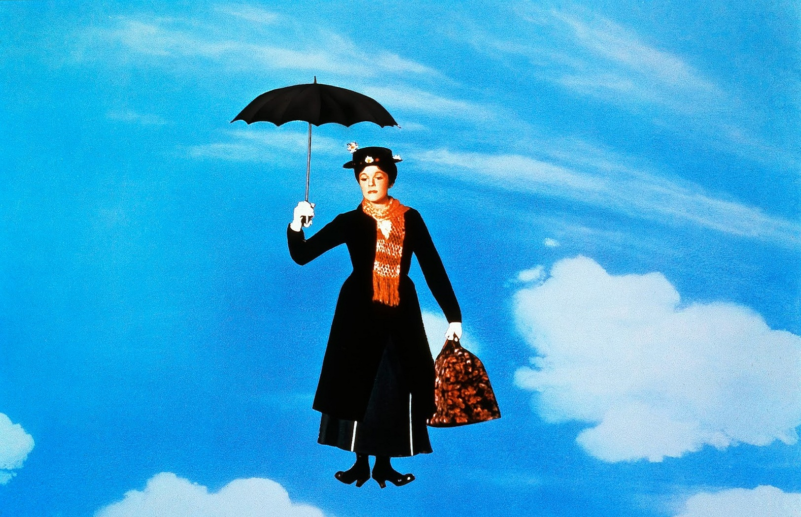

Rules and Guidelines
The following is a list of rules, guidelines, and restrictions for JTBC. If a member fails to follow these rules, it may result in being banned from the club or not being accepted into it in the first place.
- You must be between ages 13 and 18 to join.
- Members must provide their own books.
- During meetings, don't continuously interrupt other people while they're speaking.
- Be courteous and treat others how you'd like to be treated.
- It is not necessary to read the entire book for a meeting, but at least know enough about it to have a discussion. Come prepared.
- Bringing your own snacks and drinks is welcome, depending on the meetup location.
- Be on time to the meetings.
- Opinions will differ during discussion. Don't take it personally.
Last, and certainly most importantly, have a great time reading!
Join Now
JTBC Book of the Month: Deathly Hallows
In the last book of the Harry Potter series, Harry and his friends must defeat Voldemort once and for all by destroying horcruxes and surviving the Second Great Wizarding War. The author, J.K. Rowling, caps off the series wonderfully with this novel. You can purchase Deathly Hallows on Amazon and read along with JTBC!
Top 5 Richest Authors
These are the richest authors in the world, based on net worth. This was found at Top 10 authors net-worth
.
- J.K. Rowling - over $1 Billion
- Jim Davis - $800 Million
- Candy Spelling - $600 Million
- Stephen King - $400 Million
- Danielle Steel - $375 Million

Fun Facts
Here's some fun facts about some of the greatest authors of all time!
- William Shakespeare, the most famous playwright ever, has coined many common words we use today in the English language, such as 'belongings', 'addiction', and 'fashionable'.
- J.K. Rowling's real name is Joanne, and she does not have a middle name. The "K" initial comes from her grandmother Kathleen; she chose it after her publisher suggested she use a more 'masculine' name on her book covers, as they thought more books would be sold if readers thought that a man wrote them.
- P.L. Travers, who wrote "Mary Poppins" hated the movie version of her book that Walt Disney made. She thought it was "too colorful" and that the songs were awful.